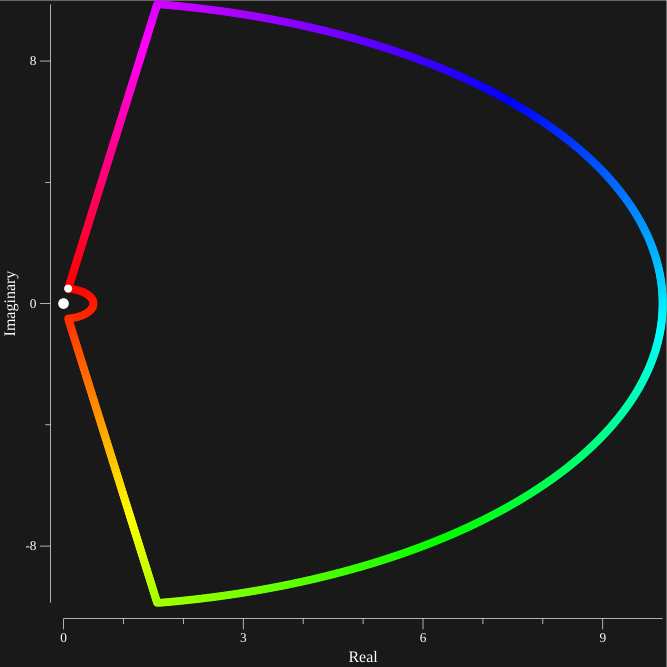
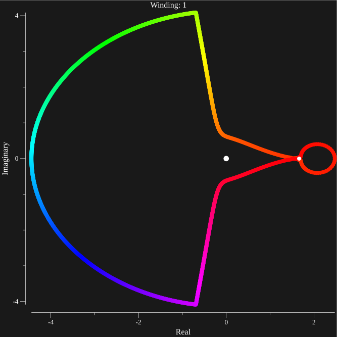

Case II

Given the countour above, a few examples of f(λ) where λ follows this countour in a counterclockwise manner are shown below. One can tell the direction of the graph traveling along the countour from Red to Green To Blue with the white dot as the starting point.
p=[2, 0] q[-1,-1] α=1 at depth=51
We see that at depth=51, the winding number is one.
p=[2, 0] q[-1,-1] α=1 at depth=51
The results are nearly indenticle at depth=50, which is a good (non rigorous) indicator that higher depths should change things in more insignificant ways.
p=[2, 0] q[-1,-1] α=1 at depth=9

However at depth=9 we get more beautifully incoherent results. It converges to somethign similar to depth=50 at around 40.